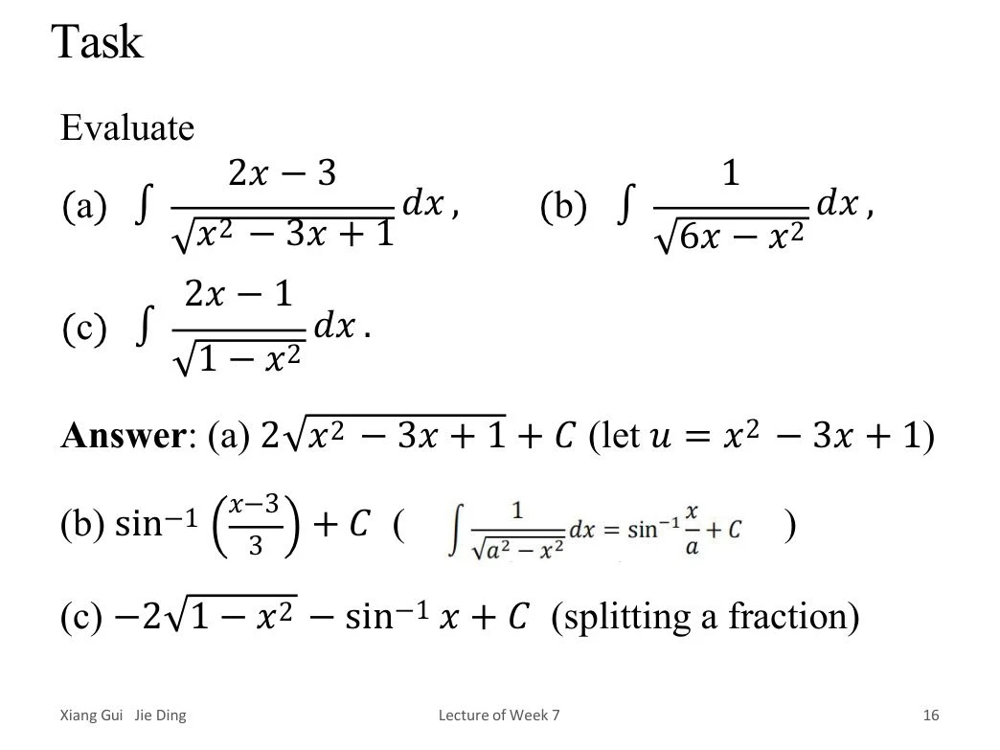

HDD4010 工程数学 I · 第 07 / 08 讲
第 4 章 · 微积分基本定理与积分方法
Fundamental Theorem of Calculus and Techniques of Integration
所属章节：第 4 章 积分
资料来源 · 3 项 / 已附 0 项
Topic 7/EMI_Week7_Lecture.pdf未附原文件Topic 7/EMI_7.pdf未附原文件Topic 7/EM_7_sol.pdf未附原文件
未附文件仅列原始名称；版本与核对日期由维护者登记。
本节定位
第 6 讲把定积分定义成黎曼和的极限，但那个定义几乎不能用来算题——除了 x² 这类极简单的函数，求和公式都不存在。本讲给出真正的计算工具：微积分基本定理（FTC）把定积分转成「找原函数 + 代端点」，随后是换元、分部积分、三角积分、三角代换与部分分式五套方法，覆盖本课程所有积分题。
这五套方法不是并列的选项，而是一棵决策树：先看被积函数的结构（复合、乘积、三角幂、根式、有理式），再决定用哪一套。本讲会把判断顺序写清楚，并在 checklist 里给出可执行流程。
学完本节你应当能够：
- 陈述并证明 FTC 的两个部分，用它计算定积分并求函数在区间上的平均值（含分段连续函数）
- 用换元法（定积分要同时换上下限）计算复合型积分
- 用分部积分处理「多项式 × 指数/三角/对数/反三角」型积分
- 按幂次奇偶选择三角积分的代换，必要时用倍角公式降幂
- 用
a sin θ、a tan θ、a sec θ消除根式 - 把有理函数拆成部分分式并逐项积分
7.1 微积分基本定理（第一部分）
设 f 在含点 a 的区间 I 上连续，定义累积函数
F(x) = ∫ₐˣ f(t) dt（x ∈ I）。
FTC 第一部分：F′(x) = f(x)。也就是说，累积函数是 f 的一个原函数——「先积分再求导」会回到原函数。
证明：由导数定义
F′(x) = lim_{h→0}[F(x+h) − F(x)]/h = lim_{h→0}(1/h)∫ₓ^{x+h} f(t)dt。
由积分中值定理，∫ₓ^{x+h} f(t)dt = h·f(ξ)，其中 ξ 在 x 与 x+h 之间；当 h → 0 时 ξ → x，由 f 的连续性得 f(ξ) → f(x)。故 F′(x) = f(x)。
直观解释（源文件）：若 x(t) 是位置，则 ∫ₐᵇ x′(t)dt 把「速度表读数」按时间累加，得到「从 t = a 到 t = b 走了多远」。FTC 说的就是「速度的累积等于位移」，这正是里程表与速度表的关系。
7.2 微积分基本定理（第二部分）
FTC 第二部分：若 F 是 f 在 I 上的任一原函数（即 F′ = f），则
∫ₐᵇ f(x)dx = F(b) − F(a)。
证明：设 G(x) = ∫ₐˣ f，由第一部分 G′ = f，故 F − G 的导数为 0，即为常数 C：F = G + C。取 x = a 得 0 = G(a) = F(a) − C，故 C = −F(a)。于是 G(b) = F(b) − F(a)。
求值符号：F(x)|ₐᵇ = F(b) − F(a)。写题时标准格式是 ∫ₐᵇ f(x)dx = [F(x)]ₐᵇ = F(b) − F(a)。
7.3 函数的平均值
若 f 在 [a, b] 上可积，则它在区间上的平均值（average / mean value）为
f̄ = (1/(b−a))∫ₐᵇ f(x)dx。
源文件例：求 f(x) = √x 在 [1, 5] 上的平均值。
f̄ = (1/4)∫₁⁵ √x dx = (1/4)·(2/3)x^{3/2}|₁⁵ = (1/6)(5√5 − 1)。
（源文件把结果写成 (5√5 − 1)/6，是一样的。）注意平均值不是「端点的平均」，也不是「中点的函数值」。
7.4 分段连续函数
若 f 在 [a, b] 上只有有限个间断点、在间断点之间连续，且在每个间断点处的单侧极限存在（有限），则称 f 在 [a, b] 上分段连续（piecewise continuous）。分段连续函数可积，且积分可以按段相加。
源文件例：f(x) = √(1−x²)（0 ≤ x ≤ 1）、f(x) = 2（1 < x ≤ 2）、f(x) = x − 2（2 < x ≤ 3），求 ∫₀³ f。
∫₀³ f = ∫₀¹√(1−x²)dx + ∫₁²2dx + ∫₂³(x−2)dx。
第一段是单位圆在第一象限的四分之一，面积 π/4（用几何意义而非原函数，因为 √(1−x²) 的原函数要用三角代换，见 7.16）；第二段 = 2(2−1) = 2；第三段 = (1/2)(1)(1) = 1/2。故
∫₀³ f = π/4 + 2 + 1/2 = π/4 + 5/2。
7.5 用 FTC 计算定积分
源文件例 1(a)：∫₀²(x² − x)dx = [x³/3 − x²/2]₀² = 8/3 − 2 = 2/3。
源文件例 1(b)：∫₋₁²(x² − 3x + 2)dx = [x³/3 − 3x²/2 + 2x]₋₁² = (8/3 − 6 + 4) − (−1/3 − 3/2 − 2) = 2/3 − (−23/6) = 9/2。
第二题最容易错在「代下限」时的符号：先把原函数在 a 处的值整体算出，再用 F(b) − F(a)，不要在式子中间随手加减。
7.6 曲线下方的面积
源文件例 2：求 y = 3x − x² 在 x 轴上方部分的面积。先找 x 截距：3x − x² = x(3 − x) = 0，得 x = 0, 3；在 (0, 3) 内 3x − x² > 0，故
A = ∫₀³(3x − x²)dx = [3x²/2 − x³/3]₀³ = 27/2 − 9 = 9/2。
要点：面积题必须先定积分区间（找交点或截距），再确认被积函数在该区间上非负；否则会用「有向面积」算出错误的正负。
7.7 两曲线之间的面积
源文件例 3：求 y = 5/(x²+1) 与 y = 1 在 x = −2 到 x = 2 之间的面积。先求交点：5/(x²+1) = 1 得 x² = 4，x = ±2。在该区间上 5/(x²+1) ≥ 1，故
A = ∫₋₂²[5/(x²+1) − 1]dx = 2∫₀²[5/(x²+1) − 1]dx（被积函数为偶函数）。
原函数：5tan⁻¹x − x。故 A = 2[5tan⁻¹2 − 2]。
上函数 − 下函数；若不确定谁在上，先在区间内取一个测试点算两者的值。若两曲线在区间内交叉，必须分段积分，否则会正负抵消。7.8 定积分的换元法
若 u = g(x) 在 [a, b] 上可导、g′ 连续，f 在 g 的值域上连续，则
∫ₐᵇ f(g(x))g′(x)dx = ∫_{g(a)}^{g(b)} f(u)du。
证明：设 F 是 f 的原函数，则 (F∘g)′ = f(g(x))g′(x)（链式法则），由 FTC：
∫ₐᵇ f(g(x))g′(x)dx = F(g(b)) − F(g(a)) = ∫_{g(a)}^{g(b)} f(u)du。
关键差别：定积分换元必须同时把上下限换成 u 的值，换完直接算，不需要再换回 x。若坚持换回 x，就要把上下限也换回来（多一步、易错）。
源文件例：∫₀⁸ cos√(x+1)/√(x+1) dx。令 u = √(x+1)，则 du = dx/(2√(x+1))，即 dx/√(x+1) = 2du。
换限：x = 0 → u = 1；x = 8 → u = 3。于是
∫₀⁸ ... = 2∫₁³ cos u du = 2[sin u]₁³ = 2(sin3 − sin1)。
7.9 不定积分的换元与三道任务
不定积分换元后必须换回原变量（因为答案要以 x 表示），并加 C。源文件三道任务：
∫(2x−3)/√(x²−3x+1) dx：令u = x²−3x+1，du = (2x−3)dx，得∫u^{−1/2}du = 2√u + C = 2√(x²−3x+1) + C∫dx/√(6x−x²)：配方6x−x² = 9 − (x−3)²，令u = x−3，得sin⁻¹((x−3)/3) + C∫(2x−1)/√(1−x²) dx：拆成2∫x/√(1−x²)dx − ∫dx/√(1−x²)，前者令u = 1−x²得−2√(1−x²)，后者为sin⁻¹x，故−2√(1−x²) − sin⁻¹x + C
第三题示范了「拆项」技巧：一个积分拆成两个各自可算的部分，比分母整体换元更省力。
7.10 三角函数的积分
四个基本结果（源文件给出并推导前两个）：
| 积分 | 结果 | 代换 |
|---|---|---|
∫tan x dx | ln|sec x| + C | u = cos x |
∫cot x dx | ln|sin x| + C | u = sin x |
∫sec x dx | ln|sec x + tan x| + C | u = sec x + tan x |
∫csc x dx | −ln|csc x + cot x| + C | u = csc x − cot x |
∫tan x dx：∫(sin x/cos x)dx，令 u = cos x、du = −sin x dx，得 −∫du/u = −ln|u| = −ln|cos x| = ln|sec x|。
∫sec x dx：分子分母同乘 (sec x + tan x)，得 ∫(sec²x + sec x tan x)/(sec x + tan x)dx；令 u = sec x + tan x，则 du 恰为分子，故 = ln|u| = ln|sec x + tan x|。这个「乘一个巧妙的因子」是本节唯一的技巧点，记不住可以现场推。
7.11 sinᵐx cosⁿx 型
按幂次奇偶分三种情形：
- m 为奇数：留一个
sin x与dx配对，其余用sin² = 1 − cos²转成 cos，令u = cos x - n 为奇数：对称处理，令
u = sin x - m、n 都是偶数：用倍角公式降幂：
sin²x = (1 − cos2x)/2、cos²x = (1 + cos2x)/2
源文件例 (a)：∫sin³x cos⁸x dx。sin 的幂为奇，令 u = cos x，du = −sin x dx：
∫sin³x cos⁸x dx = ∫(1 − cos²x)cos⁸x sin x dx = −∫(1 − u²)u⁸du = ∫(u¹⁰ − u⁸)du，
故 = u¹¹/11 − u⁹/9 + C = (1/11)cos¹¹x − (1/9)cos⁹x + C。
源文件例 (b)：∫cos⁴x dx。用倍角公式：cos⁴x = [(1 + cos2x)/2]² = (1 + 2cos2x + cos²2x)/4；再对 cos²2x 用一次倍角：= (1 + cos4x)/2。于是
∫cos⁴x dx = (1/4)∫[1 + 2cos2x + (1 + cos4x)/2]dx = (3/8)x + (1/4)sin2x + (1/32)sin4x + C。
7.12 secᵐx tanⁿx 型与 cscᵐx cotⁿx 型
secᵐ tanⁿ：若 n 为偶数，留 sec²x dx，令 u = tan x；若 m 为偶数，留 sec²x 转成 1 + tan²；若 m 为奇数、n 为偶数，用分部积分。恒等式：sec² = 1 + tan²。
例：∫sec⁴x dx = ∫(1 + tan²x)sec²x dx，令 u = tan x，得 ∫(1 + u²)du = u + u³/3 = tan x + (1/3)tan³x + C。
cscᵐ cotⁿ：若 n 为偶数，留 csc²x dx，令 u = cot x；若 m 为奇数，令 u = csc x；恒等式 csc² = 1 + cot²。
例：∫csc³x cot³x dx = ∫csc²x·cot²x·csc x cot x dx，令 u = csc x、du = −csc x cot x dx，且 cot² = u² − 1：
= −∫u²(u² − 1)du = ∫(u² − u⁴)du = u³/3 − u⁵/5 + C = (1/3)csc³x − (1/5)csc⁵x + C。
源文件另一道任务：∫(sec x + tan x)²dx。展开得 sec²x + 2sec x tan x + tan²x，用 tan² = sec² − 1 化为 2sec²x + 2sec x tan x − 1，逐项积分得 2tan x + 2sec x − x + C。
产品化公式：∫sin2x cos3x dx 用积化和差 sinA cosB = [sin(A−B) + sin(A+B)]/2，得 (1/2)cos x − (1/10)cos5x + C。
∫√(1 − cos4x)dx（0 ≤ x ≤ π/2）：由 1 − cos4x = 2sin²2x 得被积函数 √2 sin2x（该区间内 sin2x ≥ 0），故积分为 −(√2/2)cos2x + C。
7.13 三角代换：消除根式
当被积函数含下列根式时，用三角代换把根式变成有理式：
| 根式 | 代换 | 化简结果 | θ 的范围 |
|---|---|---|---|
√(a² − x²) | x = a sin θ | a cos θ | [−π/2, π/2] |
√(a² + x²) | x = a tan θ | a sec θ | (−π/2, π/2) |
√(x² − a²) | x = a sec θ | a tan θ | x ≥ a: [0, π/2)；x ≤ −a: (π/2, π] |
记忆方式：画直角三角形。x = a sin θ 时对边 x、斜边 a，邻边 √(a²−x²)；x = a tan θ 时对边 x、邻边 a，斜边 √(a²+x²)；x = a sec θ 时斜边 x、邻边 a，对边 √(x²−a²)。
源文件例 (a)：∫dx/(x²√(16−x²))。令 x = 4sin θ，dx = 4cos θ dθ，√(16−x²) = 4cos θ：
∫ = ∫(4cos θ dθ)/(16sin²θ·4cos θ) = (1/16)∫csc²θ dθ = −(1/16)cot θ + C。
由三角形：cot θ = (邻边)/(对边) = √(16−x²)/x，故 = −√(16−x²)/(16x) + C。
源文件例 (b)：∫dx/√(4+x²)。令 x = 2tan θ，dx = 2sec²θ dθ，√(4+x²) = 2sec θ：
∫ = ∫sec θ dθ = ln|sec θ + tan θ| + C = ln|√(4+x²)/2 + x/2| + C = ln(√(4+x²) + x) + C₁，其中 C₁ = C − ln2。
ln 2 之类的常数，把它并进 C 即可；但必须显式说明「令 C₁ = C − ln2」，否则答案形式与标准答案不一致会被扣分。7.14 分部积分
由乘积法则 (uv)′ = u′v + uv′ 移项、积分，得
∫u dv = uv − ∫v du，或写成 ∫u(x)v′(x)dx = u(x)v(x) − ∫v(x)u′(x)dx。
它的作用是「把不好积的 u dv 换成可能好积的 v du」。选 u 的顺序（源文件虽未明说，但由例题可归纳）：反三角 → 对数 → 幂 → 三角 → 指数（越靠前越适合当 u，因为求导后会变简单）。
源文件例 1(a)：∫x cos x dx。取 u = x、dv = cos x dx，则 du = dx、v = sin x：
= x sin x − ∫sin x dx = x sin x + cos x + C。
源文件例 1(b)：∫x²eˣ dx。取 u = x²、dv = eˣdx，两次分部：
= x²eˣ − 2∫xeˣdx = x²eˣ − 2(xeˣ − ∫eˣdx) = eˣ(x² − 2x + 2) + C。
源文件例 2(a)：∫ln x dx。取 u = ln x、dv = dx，则 du = dx/x、v = x：
= x ln x − ∫x·(1/x)dx = x ln x − x + C。
源文件例 2(b)：∫x tan⁻¹x dx。取 u = tan⁻¹x、dv = x dx，则 du = dx/(1+x²)、v = x²/2：
= (x²/2)tan⁻¹x − (1/2)∫x²/(1+x²)dx = (x²/2)tan⁻¹x − (1/2)∫(1 − 1/(1+x²))dx，
故 = (x²/2)tan⁻¹x − x/2 + (1/2)tan⁻¹x + C = ((x²+1)/2)tan⁻¹x − x/2 + C。
源文件任务：∫x²sin x dx = −x²cos x + 2x sin x + 2cos x + C；∫sin⁻¹x dx = x sin⁻¹x + √(1−x²) + C；∫eˣcos x dx = (1/2)eˣ(sin x + cos x) + C。
最后这个「循环型」值得单独记：两次分部后右边重新出现原积分，把它移到左边解方程即可（系数为 1/2）。
7.15 递推公式
分部积分还可以用来把高次幂降到低次幂，得到递推公式（reduction formula）。源文件推导 ∫sinⁿx dx：取 u = sin^{n−1}x、dv = sin x dx，则 du = (n−1)sin^{n−2}x cos x dx、v = −cos x：
∫sinⁿx dx = −cos x sin^{n−1}x + (n−1)∫cos²x sin^{n−2}x dx，
把 cos² = 1 − sin² 代入，右边的 ∫sinⁿ 移项，得
∫sinⁿx dx = −(1/n)cos x sin^{n−1}x + ((n−1)/n)∫sin^{n−2}x dx。
应用（n = 4）：∫sin⁴x dx = −(1/4)cos x sin³x + (3/4)∫sin²x dx；再用 n = 2：∫sin²x dx = −(1/2)cos x sin x + (1/2)∫dx = −(1/2)sin x cos x + x/2。合并得
∫sin⁴x dx = −(1/4)cos x sin³x − (3/8)sin x cos x + (3/8)x + C，
与用倍角公式得到的 (3/8)x − (1/4)sin2x + (1/32)sin4x + C 等价（展开 sin2x、sin4x 可互相转化）。
7.16 有理函数的积分：第一步永远是除法
形如 ∫P(x)/Q(x)dx 的积分。若 deg P ≥ deg Q，先用多项式除法把它写成「多项式 + 真分式」：
P/Q = S + R/Q，其中 deg R < deg Q。
源文件例：∫(x³ + 3x²)/(x² + 1)dx。除法得 = x + 3 − (x+3)/(x²+1)，故
= x²/2 + 3x − (1/2)ln(x²+1) − 3tan⁻¹x + C。
三个基本公式（分母是一次或二次）：
| 积分 | 结果 |
|---|---|
∫dx/(ax + b) | (1/a)ln|ax + b| + C |
∫x dx/(x² ± a²) | (1/2)ln|x² ± a²| + C |
∫dx/(x² + a²) | (1/a)tan⁻¹(x/a) + C |
∫dx/(x² − a²) | (1/(2a))ln|(x−a)/(x+a)| + C |
7.17 部分分式：四种情形
设 f(x) = P(x)/Q(x) 且 deg P < deg Q（否则先除法）：
- 互不相同的线性因子
Q = (x−a)(x−b)⋯：f = A/(x−a) + B/(x−b) + ⋯ - 重复线性因子
(x−a)²：f = A/(x−a) + B/(x−a)² + ⋯ - 不可约二次因子
ax²+bx+c（判别式 < 0）：f = (Ax+B)/(ax²+bx+c) + ⋯ - 重复不可约二次因子：
f = (Ax+B)/(ax²+bx+c) + (Cx+D)/(ax²+bx+c)² + ⋯
求系数的方法：两边乘以 Q(x) 得到多项式恒等式，再「代入特殊值」或「比较同次项系数」。前者更快，后者更稳。
源文件例（互异线性）：1/(x² − a²) = (1/(2a))[1/(x−a) − 1/(x+a)]，故 ∫ = (1/(2a))ln|x−a| − (1/(2a))ln|x+a| + C。
源文件例（重复线性）：1/(x(x−1)²) = 1/x − 1/(x−1) + 1/(x−1)²。验证：通分后分子 (x−1)² − x(x−1) + x = x² − 2x + 1 − x² + x + x = 1 ✓。故积分为 ln|x| − ln|x−1| − 1/(x−1) + C。
源文件例（不可约二次）：∫dx/(x³+1)。分解 x³+1 = (x+1)(x²−x+1)，设
1/((x+1)(x²−x+1)) = A/(x+1) + (Bx+C)/(x²−x+1)，
解得 A = 1/3、B = −1/3、C = 2/3。二次因子配方：x² − x + 1 = (x − 1/2)² + 3/4。于是
∫ = (1/3)ln|x+1| − (1/6)ln(x²−x+1) + (1/√3)tan⁻¹((2x−1)/√3) + C。
其中二次项的处理技巧：把分子 (−x+2)/3 拆成 −(1/6)(2x−1) + (1/2)，第一块凑成「分母的导数」得到对数，第二块用 tan⁻¹ 公式。
源文件综合例：∫(x³+2)/(x³−x)dx。除法：(x³+2)/(x³−x) = 1 + (x+2)/(x(x−1)(x+1))；部分分式解得 A = −2（对应 1/x）、B = 3/2（对应 1/(x−1)）、C = 1/2（对应 1/(x+1)）。故
= x − 2ln|x| + (3/2)ln|x−1| + (1/2)ln|x+1| + C。
原版图页（源 PDF 插图页）



| English | 中文 | 说明 / 例句 |
|---|---|---|
| fundamental theorem of calculus | 微积分基本定理 | d/dx∫ₐˣf = f(x) and ∫ₐᵇf = F(b) − F(a). |
| average value | 平均值 | f̄ = (1/(b−a))∫ₐᵇ f(x)dx. |
| piecewise continuous | 分段连续 | Finitely many discontinuities with finite one-sided limits; integrable. |
| substitution | 换元法 | ∫f(g(x))g′(x)dx = ∫f(u)du; for definite integrals also change the limits. |
| change of limits | 换上下限 | In a definite integral, x = a gives u = g(a), x = b gives u = g(b). |
| integration by parts | 分部积分 | ∫u dv = uv − ∫v du. |
| reduction formula | 递推公式 | Expresses ∫sinⁿ in terms of ∫sin^{n−2}. |
| trigonometric integral | 三角积分 | Choose u = cos x or sin x according to which power is odd. |
| double-angle formula | 倍角公式 | sin²x = (1−cos2x)/2, cos²x = (1+cos2x)/2, used when both powers are even. |
| trigonometric substitution | 三角代换 | x = a sin θ, a tan θ, a sec θ to remove √(a²−x²), √(a²+x²), √(x²−a²). |
| partial fractions | 部分分式 | Decompose P/Q into simple fractions according to the factor type of Q. |
| improper factor | 不可约二次因子 | ax²+bx+c with negative discriminant; its partial fraction has a linear numerator. |
| completing the square | 配方 | ax²+bx+c = a(x + b/2a)² + (c − b²/4a). |
| polynomial division | 多项式除法 | Write P/Q = S + R/Q before decomposing, when deg P ≥ deg Q. |
| improper integral form | 假分式 | deg P ≥ deg Q; must be divided first. |
(a) 原函数 x³/3 − x²/2。代入：[8/3 − 2] − [0] = 2/3。
(b) 原函数 x³/3 − 3x²/2 + 2x。
上端：8/3 − 6 + 4 = 2/3；下端：−1/3 − 3/2 − 2 = −23/6。
相减：2/3 − (−23/6) = 4/6 + 23/6 = 27/6 = 9/2。
要点：先把 F(b) 与 F(a) 各自算成一个数，再做减法；分式运算不要在中途混着做，容易丢负号。
令 u = √(x+1)，则 u² = x + 1、2u du = dx，故 dx/√(x+1) = 2du。
换限：x = 0 → u = 1；x = 8 → u = 3。
原式 = ∫₁³ 2cos u du = 2[sin u]₁³ = 2(sin3 − sin1)。
结果保留精确形式（考试无计算器），不要写 0.28 之类的小数。若题目要求近似，用 sin3 ≈ 0.141、sin1 ≈ 0.841 得 2(−0.700) ≈ −1.40。
对照：若用不定积分换元再回代，会得到 2sin√(x+1)，再代 0 与 8，结果相同——但多一步回代，容易在回代时把 √(x+1) 写成 x+1。
(a) 取 u = x²、dv = eˣdx，v = eˣ：= x²eˣ − 2∫xeˣdx。
对 ∫xeˣdx 再用一次（u = x、dv = eˣdx）：= xeˣ − ∫eˣdx = xeˣ − eˣ。
代回：= x²eˣ − 2(xeˣ − eˣ) + C = eˣ(x² − 2x + 2) + C。
(b) 取 u = tan⁻¹x、dv = x dx，v = x²/2、du = dx/(1+x²)：
= (x²/2)tan⁻¹x − (1/2)∫x²/(1+x²)dx。
拆项：x²/(1+x²) = 1 − 1/(1+x²)，故 ∫ = x − tan⁻¹x。
代回：= (x²/2)tan⁻¹x − x/2 + (1/2)tan⁻¹x + C = ((x²+1)/2)tan⁻¹x − x/2 + C。
要点：分部积分后剩下的积分要「凑成可算的形状」——通常靠拆项、配方或再分部。x²/(1+x²) 的拆项是固定套路。
步骤 1（除法）：(x³+2)/(x³−x) = (x³ − x + x + 2)/(x³−x) = 1 + (x+2)/(x³−x)。
步骤 2（分解分母）：x³ − x = x(x−1)(x+1)。
步骤 3（部分分式）：设 (x+2)/(x(x−1)(x+1)) = A/x + B/(x−1) + C/(x+1)。两边乘分母：x + 2 = A(x−1)(x+1) + Bx(x+1) + Cx(x−1)。
代 x = 0：2 = A(−1)(1)，故 A = −2；代 x = 1：3 = B(1)(2)，故 B = 3/2；代 x = −1：1 = C(−1)(−2)，故 C = 1/2。
步骤 4（逐项积分）：
∫ = ∫1dx − 2∫dx/x + (3/2)∫dx/(x−1) + (1/2)∫dx/(x+1)
= x − 2ln|x| + (3/2)ln|x−1| + (1/2)ln|x+1| + C。
验算：对结果求导，应回到 (x³+2)/(x³−x)；也可取 x = 2 数值核对（结果约 2 − 1.386 + 0 + 0.549 = 1.163，与 10/6 ≈ 1.667？——注意数值核对要连同 C 的任意性一起看，通常验算导数更可靠）。
- 求
∫dx/(x² − 9)。 - 求
∫(2x − 3)/√(x² − 3x + 1) dx。 - 求
∫sin³x cos⁸x dx。 - 求
∫dx/(x²√(16 − x²))。 - 求
∫x² cos(πx) dx。 - 求
∫₀^{π/4} sec⁵x dx（作业七第 4(b) 题）。
答案与思路
1. 分解 1/(x²−9) = (1/6)[1/(x−3) − 1/(x+3)]，故 (1/6)ln|(x−3)/(x+3)| + C。
2. 令 u = x² − 3x + 1、du = (2x−3)dx，得 2√(x²−3x+1) + C。
3. 令 u = cos x：−∫(1−u²)u⁸du = ∫(u¹⁰ − u⁸)du = (1/11)cos¹¹x − (1/9)cos⁹x + C。
4. 令 x = 4sin θ：(1/16)∫csc²θ dθ = −(1/16)cot θ = −√(16−x²)/(16x) + C。
5. 两次分部：u = x²、dv = cos πx dx，得 v = sin πx/π；= (x²/π)sin πx − (2/π)∫x sin πx dx；再对 ∫x sin πx dx 分部（v = −cos πx/π），最终 (x²/π)sin πx + (2x/π²)cos πx − (2/π³)sin πx + C。
6. 用递推公式：∫sec⁵ = (1/4)sec³x tan x + (3/4)∫sec³x，∫sec³ = (1/2)sec x tan x + (1/2)ln|sec x + tan x|。合并后代入上下限：在 π/4 处 sec = √2、tan = 1，得 (1/4)(2√2) + (3/8)(√2) + (3/8)ln(1+√2) = 7√2/8 + (3/8)ln(1+√2)；在 0 处各项为 0。
deg P ≥ deg Q 时必须先除，否则分解形式不成立。sin 奇则 u = cos，cos 奇则 u = sin）；两者都偶时必须降幂，不能硬代换。∫(f − g) 会在交叉处出现负面积抵消。方法与清单
定积分计算（四步）
- 先看能否直接用基本公式或 FTC：找原函数
- 复合型先换元；若做定积分换元，立即把上下限换成新变量并写清新限
- 分段函数按段积分再相加；含绝对值先按零点分段去绝对值
- 用几何意义（面积、奇偶性）交叉验证结果的正负与量级
分部积分的 u 选择顺序
- 优先级：反三角函数 → 对数函数 → 幂函数（多项式）→ 三角函数 → 指数函数，越靠前越适合作 u
- 把剩下的部分整体作 dv，并确认 dv 容易积分出 v
- 套
uv − ∫v du，检查新积分是否比原积分更简单 - 若新积分与原积分同型（如
eˣcos x），移项解出原积分
有理函数积分（四步）
- 若
deg P ≥ deg Q，先做多项式除法 - 把 Q 在实数范围内分解成线性因子与不可约二次因子的乘积
- 按因子类型写出部分分式（互异线性、重复线性、不可约二次、重复二次）
- 用代特殊值或比较系数求系数，逐项积分（对数项 + tan⁻¹ 项）
| 源文件 | 页码 | 覆盖知识点 |
|---|---|---|
| Topic 7/EMI_Week7_Lecture.pdf | p2–p3 | 黎曼和与定积分定义的复习 |
| Topic 7/EMI_Week7_Lecture.pdf | p4–p7 | FTC 两部分、直觉解释、第一部分的证明、求值符号 |
| Topic 7/EMI_Week7_Lecture.pdf | p8 | 平均值定义与 √x 在 [1,5] 上的例子 |
| Topic 7/EMI_Week7_Lecture.pdf | p9–p10 | 分段连续函数与三分段例题 |
| Topic 7/EMI_Week7_Lecture.pdf | p11–p13 | 两道定积分计算、y = 3x−x² 的面积、两曲线间面积 |
| Topic 7/EMI_Week7_Lecture.pdf | p14–p16 | 定积分换元定理与证明、∫₀⁸ 的例题、三道换元任务 |
| Topic 7/EMI_Week7_Lecture.pdf | p17–p24 | ∫tan/cot/sec/csc 的公式与推导、sinᵐcosⁿ 策略与两例、secᵐtanⁿ 与 cscᵐcotⁿ 策略与两例、三道三角积分任务 |
| Topic 7/EMI_Week7_Lecture.pdf | p25–p28 | 三类三角代换与三角形图示、两个根式积分例子 |
| Topic 7/EMI_Week7_Lecture.pdf | p29–p33 | 分部积分的推导与 Leibniz 写法、四道例题、三道任务 |
| Topic 7/EMI_Week7_Lecture.pdf | p36–p37 | ∫sinⁿ 的递推公式推导与 ∫sin⁴ 的应用 |
| Topic 7/EMI_Week7_Lecture.pdf | p38–p40 | 有理函数与除法算法、(x³+3x²)/(x²+1)、线性与二次分母公式、互异线性因子的部分分式 |
| Topic 7/EMI_Week7_Lecture.pdf | p41–p42 | (x³+2)/(x³−x) 的四步分解与积分 |
| Topic 7/EMI_Week7_Lecture.pdf | p43–p45 | 重复线性因子、不可约二次因子、重复二次因子的部分分式形式 |
| Topic 7/EMI_Week7_Lecture.pdf | p46–p48 | 1/(x³+1) 的部分分式、配方与最终结果 |
| Topic 7/EMI_Week7_Lecture.pdf | p49–p50 | 六道综合任务（4x²+13x−9 型、1/(x(x−1)²) 型等）及答案 |
| Topic 7/EMI_7.pdf | p1 | 作业七的五道题（平均值、sgn 与 |cos| 的定积分、三角幂、分部积分、有理函数） |
| Topic 7/EM_7_sol.pdf | p1–p3 | 作业七的完整解答：π/4、1、8、sin 幂代换、sec⁵tan、x²cos πx、∫₀^{π/4}sec⁵、三个有理函数积分 |
| （跳过）Topic 7/Lecture One.html、Exercise Seven.html、Exercise Seven Solutions.html | — | 均为 Moodle 登录页快照，无可读正文；作业与解答以 EMI_7.pdf、EM_7_sol.pdf 为准 |
| （拓展） | — | 分部积分的 u 选择顺序、积分方法决策树、secⁿ 递推公式为归纳性补充，源文件以例题形式呈现 |